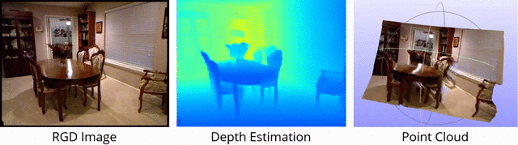
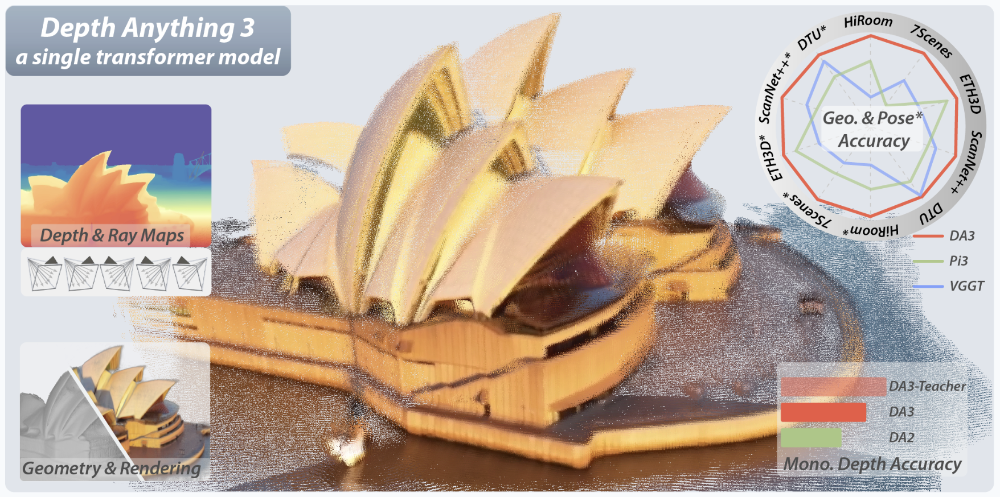
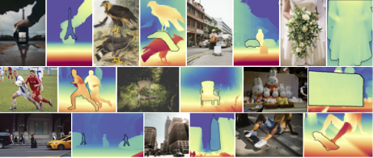
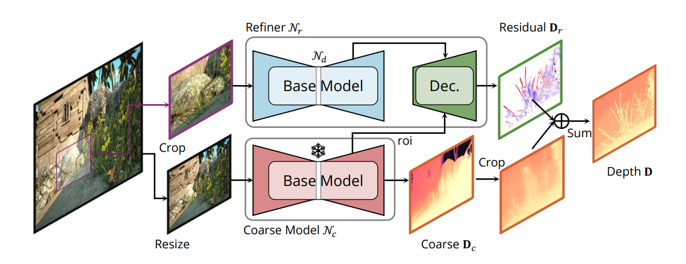
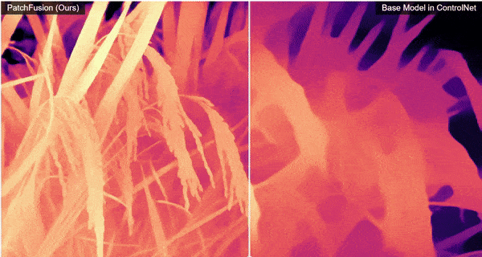
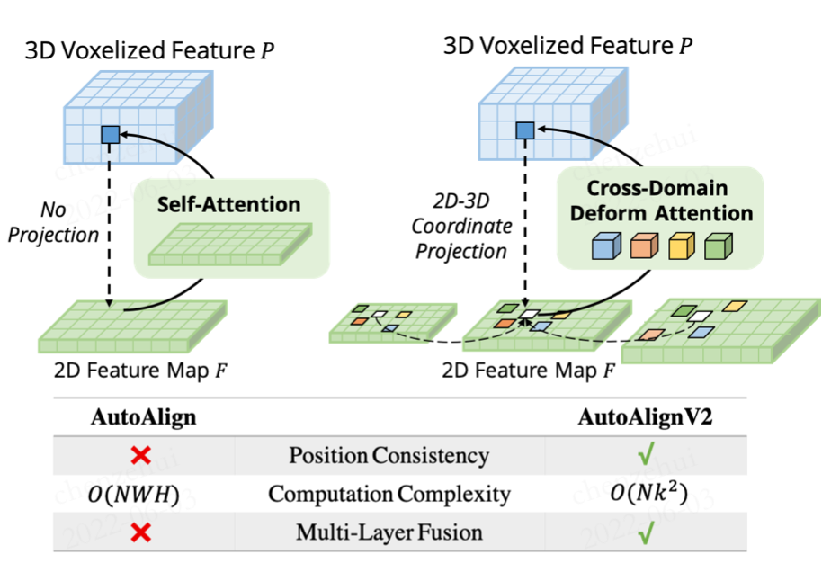
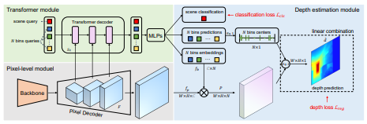

Zhenyu Li 李震宇Phd StudentKing Abdullah University of Science and Technology Email: zhenyu.li.9955@gmail.com; Github: https://github.com/zhyever Google Scholar: Google Scholar Link CV: CV Link |
|
Biography
I'm a 3rd-year PhD student at King Abdullah University of Science and Technology (KAUST), advised by Prof. Peter Wonka.
I got my B.E. and M.S degrees in computer science at Harbin Institute of Technology, Harbin, China.
My research was concentrating on 3D reconstruction and now are switching to other domains, like generative models, RL, VLM, etc.
News
- 2026.02: Two papers accepted to CVPR 2026! One of them was completed during my internship at Meta. I sincerely thank all my peers and mentors for their guidance and support.
- 2026.01: Two papers accepted to ICLR 2026! Glad to contribute to the DepthAnything3 project, which received an oral presentation this year.
- 2025.08: I started my internship at Meta Reality Labs, Zurich, Switzerland!
- 2025.06: One paper accepted to ICCV 2025!
- 2025.01: I started my internship at ByteDance Seed, Beijing, China!
- 2024.07: One paper accepted to ECCV 2024!
- 2024.03: One paper accepted to CVPR 2024!
Experience
- 2021.03 - 2021.09, Development and Research Intern (ADAS), SenseTime, Shanghai, China
- 2022.01 - 2022.07, Research Intern (ADAS), SenseTime, Shanghai, China
- 2022.08 - 2023.04, Research Intern (ADAS) (Elite Camp), DiDi Cargo, Beijing, China
- 2025.01 - 2025.07, Research Intern (3D Reconstruction) (TopSeed Candidate), ByteDance Seed, Beijing, China
- 2025.08 - 2026.02, Research Intern (Body Tracking for AR/VR), Meta Reality Labs, Zurich, Switzerland
Awards
- Dean’s List Award 2024, award to top students by KAUST CEMSE for their academic achievements.
- 1st place at VCL 2023 Challenge, Multitask Learning for Robustness Track! (ICCV 2023 Workshop)
- China National Scholarship 2022.
- 3rd place at SSLAD 2022 Challenge, 3D Object Detection Track! (ECCV 2022 Workshop)
- 2nd place at Mobile AI&AIM 2022 Challenge, Monocular Depth Estimation Track! (ECCV 2022 Workshop)
Codebase
 |
Monocular Depth Estimation Toolbox Zhenyu Li 2022 [Code] [Bibtex] 
|
Selected Publications
 |
Depth Anything 3: Recovering the Visual Space from Any Views Haotong Lin, Sili Chen, Hao Liew Jun, Y. Chen Donny, Zhenyu Li, Guang Shi, Jiashi Feng, Bingyi Kang ICLR, 2026 (Oral) [Project Page] [PDF] [Code] 
|
 |
Amodal Depth Anything: Amodal Depth Estimation in the Wild Zhenyu Li, Mykola Lavreniuk, Shariq Farooq Bhat, Peter Wonka ICCV, 2025 [Project Page] [PDF] [Code] |
 |
PatchRefiner: Leveraging Synthetic Data for Real-Domain High-Resolution Monocular Metric Depth Estimation Zhenyu Li, Shariq Farooq Bhat, Peter Wonka ECCV, 2024 [PDF] [Code] |
 |
PatchFusion: An End-to-End Tile-Based Framework for High-Resolution Monocular Metric Depth Estimation Zhenyu Li, Shariq Farooq Bhat, Peter Wonka CVPR, 2024 [Project Page] [PDF] [Code] 
|
 |
AutoAlignV2: Deformable Feature Aggregation for Dynamic Multi-Modal 3D Object Detection Zehui Chen, Zhenyu Li, Shiquan Zhang, Liangji Fang, Qinhong Jiang, Feng Zhao ECCV, 2022 [PDF] [Code] |
 |
BinsFormer: Revisiting Adaptive Bins for Monocular Depth Estimation Zhenyu Li, Xuyang Wang, Xianming Liu, Junjun Jiang Ranked 1st on KITTI depth estimation benchmark (Feb, 2022). Transactions on Image Processing [PDF] [Code]
|
Service
- Conference Reviewer: CVPR, ECCV, ICCV, NeurIPS, SIGGRAPH.